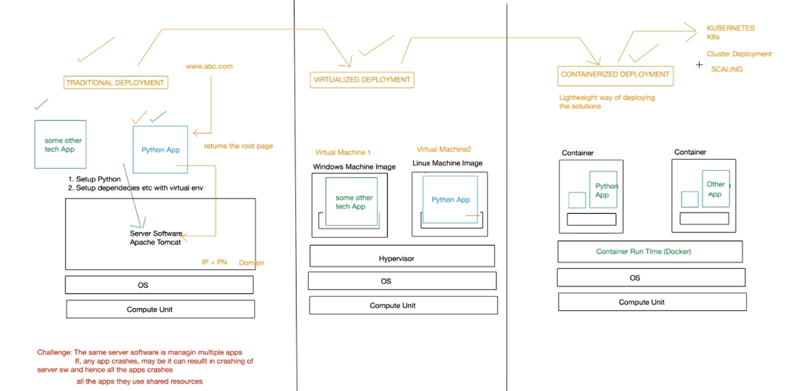

Date: 30th July 2026
Duration: 2 Hours
Training Company: Auribises Technologies
Trainer: Mr. Ishant Kumar
Today's session introduced Docker and the concept of containerization. As AI applications become more complex, deploying them consistently across different environments becomes challenging. Docker solves this problem by packaging an application together with all of its dependencies into lightweight containers, ensuring that the application behaves the same regardless of where it is executed. The session also compared traditional deployment, virtual machines, and containerized deployment to understand how software deployment has evolved over time.
We first studied the traditional approach to application deployment. In this model, multiple applications are installed directly on a single operating system along with their required dependencies. Since every application shares the same environment, dependency conflicts may occur and one application's failure can potentially affect others. Managing software versions, libraries, and runtime environments also becomes increasingly difficult as more applications are deployed on the same server.

To overcome the limitations of traditional deployment, virtualization introduces Virtual Machines (VMs). Each VM contains its own operating system and provides complete isolation between applications. Although virtual machines improve reliability, they require considerably more system resources because every VM runs an independent operating system. This results in higher memory consumption, slower startup times, and increased infrastructure costs.
Docker provides a lightweight alternative to virtual machines by packaging an application together with its dependencies inside isolated containers. Unlike virtual machines, Docker containers share the host operating system kernel, eliminating the need to run multiple operating systems simultaneously. This significantly reduces resource consumption while providing a consistent execution environment across development, testing, and production systems.
We also discussed the basic Docker architecture, where applications run inside containers managed by the Docker Engine. Since each container includes everything required for execution, developers no longer have to worry about dependency conflicts or differences between local and production environments. This makes Docker one of the most widely adopted deployment technologies in modern backend, cloud, and AI application development.
The session concluded with a brief introduction to Kubernetes, a container orchestration platform used to deploy, manage, and scale Docker containers in production environments. While Docker focuses on creating and running containers, Kubernetes manages multiple containers across clusters of machines, making it suitable for enterprise-scale applications.
Explore Docker installation on a local system and understand the basic Docker workflow involving images, containers, and container runtime.
Today's session introduced one of the most important technologies used in modern software engineering. Before learning Docker, deployment often seemed like a separate step after development. However, this session demonstrated that packaging applications consistently is equally important. Understanding containerization will be valuable when deploying AI applications, backend services, and cloud-native projects in the future.
In the next session, we will continue exploring deployment technologies and integrate them into practical development workflows for AI-powered applications.